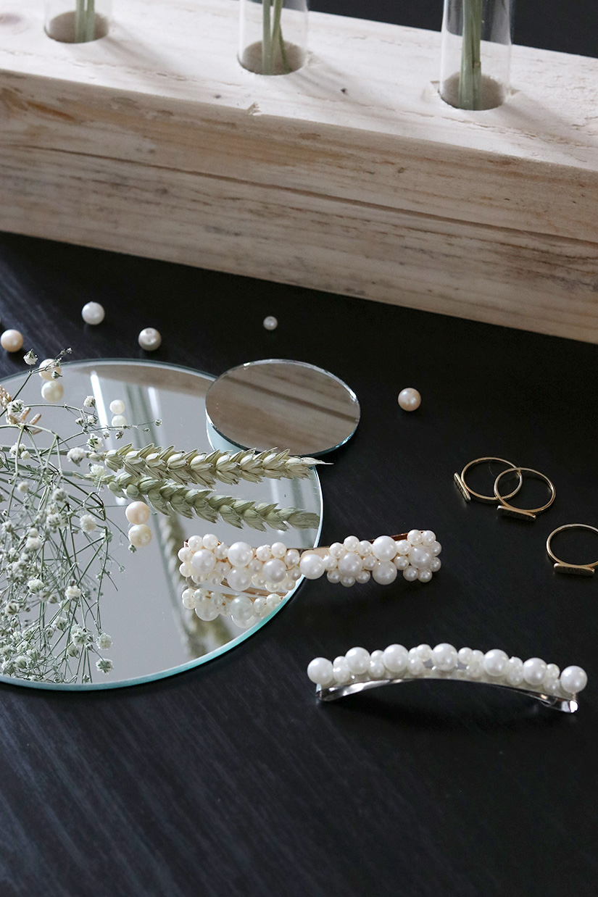

La fabrication de petits objets décoratifs ou d’ameublement intérieur.
FVM « faites-le par vous-même », « fait maison », voire « fait à la main » désigne à la fois des activités visant à créer ou réparer des objets de la vie courante, technologiques, ou artistiques, généralement de façon artisanale, et un mouvement culturel, notamment musical.
FVM "Faites-le vous-même" est la méthode de construction, de modification ou de réparation des choses par soi-même sans l'aide directe de professionnels ou d'expert certifiés.
Dérrière le FVM, il y'a l'idée qu'un moment particulier de sa vie ne peut pas être complètement délégué à des professionnels et que l'implication dans l'événement est un signe de la valeur qu'on lui accorde.